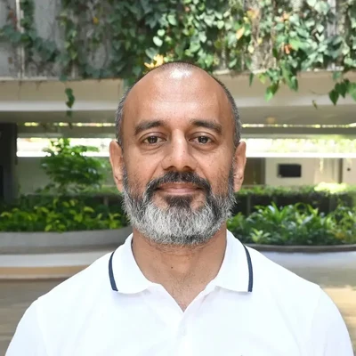
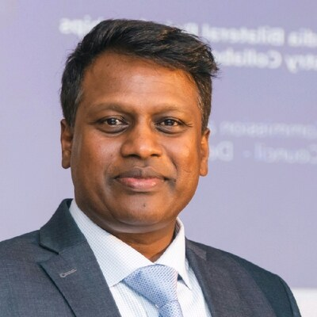

About
Reconfigurable computing involves using hardware that can be dynamically reprogrammed to optimize performance for specific tasks. Field-Programmable Gate Arrays (FPGAs) are mainly used for reconfigurable computing, and are crucial for high-performance computing applications and for accelerating machine learning (ML) workloads. Unlike general-purpose CPUs and GPUs, FPGAs can be reconfigured to execute repetitive and computationally intense operations, offering better energy efficiency.
The Reconfigurable Computing and Systems Workshop (ROCS 2026) is the third edition of the ROCS series, held previously at HiPC 2024 and HiPC 2025, and returns to HiPC 2026 in Bengaluru. Reconfigurable architectures offer compelling solutions to the computational patterns arising in deep learning, genomics, computational physics, drug discovery, and beyond, owing to their adaptability and customizability. Unlike GPUs, however, FPGAs have yet to become widely usable general-purpose accelerators. ROCS 2026 asks whether FPGAs are now positioned to offer viable alternatives where cost, power, and performance align, and whether recent advances in agentic AI can make HLS and design tools more capable and accessible.
Building on a growing community, this year the workshop introduces a peer-reviewed short-paper track, alongside a poster-abstract track, invited talks, and industry sessions.
Keynote Speakers
-

Academic Keynote Anupam Chattopadhyay Associate Professor, College of Computing & Data Science, Nanyang Technological University, Singapore AI is everywhere: Where is EDA? -

Industry Keynote Joe Williams Founder and Director, Business — Vimanic Systems Talk title to be announced
AI is everywhere: Where is EDA?
Anupam Chattopadhyay — Academic Keynote
Rapid adoption of AI agents at various phases of Electronic Design Automation (EDA) is catching traditional designers and EDA developers off-guard, similar to many other domains. This calls for a consolidated effort towards understanding the true benefits and pitfalls. In this talk, we will discuss three major phases of agentic AI in EDA. First, the performance/efficiency benefit and cost of AI adoption for individual tasks will be studied. Second, for multi-agent flows, various agentic architectures will be discussed. Third, security and privacy challenges of agentic AI will be highlighted. The talk will conclude with a clear roadmap for research and development along these three topics as well as presenting an ambitious, long-term objective of fully autonomous design.
Joe Williams’s talk title and abstract, and speaker bios, will be posted here as they are confirmed. The program also features invited talks and industry technical talks.
Invited Talk
-
Invited Talk Viktor K. Prasanna Charles Lee Powell Chair in Engineering and Professor of Computer Science, University of Southern California Towards Real-time AI at the Edge
Towards Real-time AI at the Edge
Viktor K. Prasanna — Invited Talk
Edge AI applications including Agentic AI systems require real-time performance. In addition, in many applications, energy efficiency becomes a critical metric. To meet these requirements, recently many edge platforms have been proposed including GPUs, FPGAs, NPUs and heterogeneous architectures such as AI PCs. These devices are being used along with multi-core and novel memory technologies to realize advanced platforms to accelerate edge inference and support diverse applications requiring low latency. We will review emerging technologies for edge inference and advances in reconfigurable computing over the past three decades leading up to current innovations in FPGA accelerators for AI. We will illustrate parallel architectures and algorithms for commercial, defense and space applications. Using our algorithm-architecture co-design methodology to realize high performance accelerators for these applications, we demonstrate the role of modeling and algorithmic optimizations to develop highly efficient Intellectual Property (IP) cores for FPGAs and realize end to end application acceleration. We illustrate our methodology by developing high performance designs for graph machine learning, long context LLM inference, Mixture of Agents inference and SAR ATR. We conclude by identifying opportunities and challenges in exploiting emerging heterogeneous architectures composed of multi-core processors, FPGAs, integrated GPUs, NPUs and accelerators.
Accepted Papers and Posters
Short Papers
- From Specification to Vitis HLS: A Bounded LLM Agent for Image-Processing Pipelines
- RISC-V Based CNN Accelerator SoC on FPGA Using Chisel
- An HLS-Based FPGA Accelerator for LLaMA-2 Inference on Zynq UltraScale+ MPSoC: A Measured Case Study
- Accelerating Quantized Transformer-Based DNA Basecalling Inference on Edge FPGAs
- NOVA: An Output-Stationary INT8 CNN Accelerator for Edge Inference
- FINN-MP: Resource-Efficient and High-Throughput Mixed-Precision Dataflow CNN Accelerators
Posters
- Multiply-Free LLM Inference Across Heterogeneous Platforms: FPGA, CPU, GPU, and NPU
- Clock-Scaled On-Chip Correlation Power Analysis and First-Order Boolean Masking Evaluation of AES-128 on Zynq-7000 SoC
- A Configurable CORDIC Accelerator for Granularity Aware Hardware Offloading
- Hardware–Software Co-Design of a Biomedical LLM Accelerator on FPGA
Short papers will be presented as talks; posters as lightning talks and posters. The presentation order will appear in the program.
Call for Papers
Themes
The 2026 edition sharpens its focus around three themes:
- Application-level acceleration using heterogeneous FPGAs
- AI/ML on FPGAs
- LLM/agent-driven tooling for rapid FPGA development
Topics of Interest
We invite submissions on topics including, but not limited to:
- FPGA and reconfigurable architectures; adaptive and heterogeneous compute (e.g., Versal-class devices)
- High-Level Synthesis (HLS), EDA tooling, and design automation for FPGAs
- Agentic AI and LLMs for hardware generation, optimization, verification, and design-space exploration
- AI/ML acceleration on FPGAs: deep learning, CNNs, transformer and LLM inference
- Domain acceleration on reconfigurable hardware: genomics, computational physics, drug discovery, graph analytics, and scientific computing
- Runtime reconfiguration, adaptive systems, and reconfigurable systems software
- Performance, power, and cost efficiency studies comparing FPGAs with GPUs and other accelerators
- Programming models, frameworks, and toolchains that lower the barrier to FPGA development
- Case studies, reproducibility, and lessons learned in deploying reconfigurable systems
Important Dates
| Milestone | Date |
|---|---|
| Submission site opens | September 1, 2026 |
| Short paper / poster abstract submission deadline (extended) | October 16, 2026 (AoE) |
| Author notification | November 6, 2026 |
| Camera-ready / final version (firm) | November 13, 2026 |
| Workshop | December 16, 2026 |
The submission deadline is Anywhere on Earth (AoE). Deadlines follow the HiPC 2026 workshop proceedings schedule. The camera-ready deadline is firm, as it is set by the conference proceedings timeline.
Submission Guidelines
ROCS 2026 solicits submissions in two tracks, both relevant to the workshop themes:
-
1. Short papers — original work, work in progress, or experience/position contributions.
Length: up to 4 pages excluding references (figures included in the 4-page count; references may spill onto additional pages).
Format: IEEE conference template, two-column, 10pt. -
2. Poster abstracts — early-stage results, student work, and preliminary ideas.
Length: up to 2 pages including references.
Format: IEEE conference template, two-column, 10pt.
Common Guidelines
- Review: each submission is peer-reviewed by at least three program-committee members. Reviewing is single-blind. Selection is based on technical quality, relevance to the workshop theme, and potential to spark discussion.
- Presentation: accepted short papers will be presented as talks; accepted poster abstracts will be presented as lightning talks and posters.
- In-person presentation required: every accepted contribution must be presented in person by one of its authors. Virtual presentations are not permitted.
- Registration: each accepted paper must be covered by a full registration for the main HiPC 2026 conference.
- Publication: accepted short papers will be included in the HiPC Workshops (HiPCW 2026) proceedings, a dedicated volume with its own ISBN; eligible papers are also submitted to the IEEE Xplore Digital Library after the conference. Authors who prefer not to publish may opt out at the camera-ready stage and present their work at the workshop only, retaining full freedom to submit extended versions elsewhere. Poster abstracts are presentation-only and do not appear in the proceedings.
- Submission site: all submissions are made through Linklings, the HiPC submission system, at ssl.linklings.net/conferences/HiPC. Please select the ROCS track when submitting.
Program
ROCS 2026 is a half-day workshop combining invited talks, peer-reviewed short contributions, and industry engagement, comprising two keynotes — one academic and one industry — presentations of accepted short papers, lightning talks and posters, and industry technical talks.
Organizers
- Suresh Purini — Associate Professor, IIIT Hyderabad
- Chandan Karfa — Associate Professor, IIT Guwahati
- Madhura Purnaprajna — AMD, Bengaluru
- Jayashree H V — AMD University Program
Names link to email.
Program Committee
- Palash Das — IIT Jodhpur
- Soumya J — BITS Pilani, Hyderabad
- Chandan Karfa — IIT Guwahati
- Rajesh Kedia — IIT Hyderabad
- Shashwat Khandelwal — Arm, Cambridge
- Konstantina Koliogeorgi — ETH Zurich
- Stefan Nikolić — University of Novi Sad
- Suresh Purini — IIIT Hyderabad
- Madhura Purnaprajna — AMD, Bengaluru
- Nanditha Rao — IBM
- Shashwat Shrivastava — EPFL
- Kizheppatt Vipin — BITS Pilani, Goa
Additional members to be announced.
Registration & Contact
Registration is handled through the HiPC registration page at https://hipc.org/attendee-registration/
For inquiries, please email: rocs.hipc@gmail.com
Previous editions: ROCS 2025